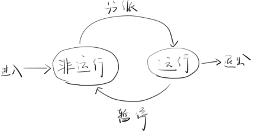
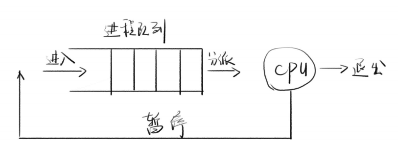
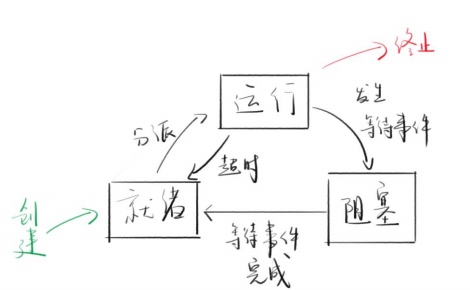

Node进程与线程
1 进程
1.1 进程 Process
- 场景
notepad.exe是一个程序，不是进程- 双击notepad.exe时，操作系统会开启一个进程
- 定义
- 进程是程序的执行实例
- 程序在CPU上执行时的活动叫做进程
- 特点
- 一个进程可以创建另一个进程（父进程和子进程）例如Chrome浏览器的网页和插件
- 通过任务管理器可以看到进程
1.2 了解CPU
-
特点：
- 一个单核CPU，在一个时刻，只能做一件事情
- 如何让用户同时看电影、听音乐、写代码呢
- 答案是在不同进程中快速切换（CPU频率）
- 以渣男交多个女朋友举例
-
多程序并发执行时
- 多个程序在宏观上并行，微观上串行
- 每个进程会出现执行-暂停-执行的规律
- 多个进程之前会出现抢资源（如打印机队列）的现象
-
进程的两个状态：运行态与非运行态

-
进程队列示意

1.3 阻塞
-
等待执行的进程中
- 都是非运行态
- 一些（A）在等待CPU资源
- 另一些（B）在等待I/O完成（如文件读取）
- 如果这时把CPU资源分配给B进程，B还是在等I/O（不占用CPU）
- B进程就是阻塞进程
- 因此，分派程序只会把CPU分配给非阻塞进程
- 比如和女朋友排队买饭，但她中途去厕所了，那么如果排到你们了就会让你去后面重新排队
-
进程的三个状态：运行，就绪，阻塞

2 线程
2.1 线程引入
- 分阶段
- 过去在面向进程设计的系统中，进程是程序的基本执行实体
- 在面向线程设计的系统中，进程本身不是基本运行单位，而是线程的容器
- 引入原因
- 进程是程序的基本执行实体，也是资源（内存等）分配的基本实体
- 导致进程的创建、切换、销毁太消耗CPU时间了
- 于是引入线程，线程作为执行的基本实体
- 而进程只作为资源分配的基本实体（不管执行了）
- 例如领导与员工们，领导负责申请、调配资源，员工们负责执行
2.2 线程Thread
- 概念
- CPU调度和执行的最小单元
- 一个进程中至少有一个线程
- 一个进程中的线程共享该进程的所有资源
- 进程的第一个线程叫做初始化线程
- 线程的调度可以由操作系统负责，也可以由用户自己负责
- 举例
- 浏览器进程中有渲染引擎、V8引擎、存储模块、网络模块、用户界面模块等
- 每个模块都可以放在一个线程里
- 分析：子进程 VS 线程
- 优先使用线程，除非需要新的资源分配
3 Node.js进程控制
3.1 child_process模块
-
目的
-
子进程的运行结果存储在系统缓存中（最大200kb）
-
等待子进程运行结束后，主进程再用回调函数读取子进程的运行结果（error,stdout,stderr）
const child_process = require('child_process') const {exec} = child_process exec('ls', (error, stdout, stderr)=>{ console.log(error) // null console.log(stdout) // 标准输出 console.log(stderr) // 错误内容 })
-
3.2 API
-
API-exec
-
exec(cmd, options, fn)
- execute的缩写，用于执行bash命令
- 同步版本：execSync，不用回调，直接const result = execSync
-
流
-
返回流（不用回调，可以监听stdout流的data事件）
const child_process = require('child_process') const {exec} = child_process const child = exec('ls -l') // 监听stdout的data事件 child.stdout.on('data', (chunk) => { console.log('得到了一次数据') console.log(chunk) }) // 监听stderr child.stderr.on('data')
-
-
Promise
-
可以使其Promise化（util.promisify）
const util = require('util') const child_process = require('child_process') const { exec } = child_process const exec2 = util.promisify(exec) exec2('ls -l').then(data => { console.log(data.stdout) })
-
-
options常用选项（exec第二个参数，execFile第三个参数）
- cwd：执行命令的路径
- env：环境变量
- shell：用什么命令行程序执行
- maxBuffer：最大缓存
exec('ls', { cwd : 'C:\\', env : {NODE_ENV : 'development'}, maxBuffer : 1024*2024 }) -
存在的问题
- 存在cmd被注入的风险
// 当接受用户输入时，以'&&'开头，接着输入一条危险指令 const userInput = '. && rm -rf /' exec2(`ls ${userInput}`).then(data)... // 那么命令行就会执行'ls'命令和'rm -rf /'命令-
推荐使用
execFile-
执行特定的程序
-
命令行的参数要用数组形式传入，无法注入
-
同步版本：execFileSync
const { execFile } = child_process const userInput = '. && pwd' execFile('ls', ['-la', userInput], (error, stdout) => { console.log(error) console.log(stdout) }) // 结果会报错，不会将'&&'作为连接号解析 -
支持流
const child = execFile('ls', [userInput]) child.stdout.on('data', chunk => { console.log(chunk) })
-
-
-
API-spawn
-
spawn- 用法与execFile方法类似
- 区别在于没有回调函数，只能通过流事件获取结果
- 没有最大200kb的限制（因为是流）
const child = spawn('ls', ['.'], { cwd : 'C:\\' }) child.stdout.on('data', chunk => { console.log(chunk.toString()) }) -
能用spawn就不要用execFile
-
-
API-fork
-
fork
- 创建一个子进程，执行Node脚本
- fork('./child.js')相当于执行spawn(‘node’,['./child.js'])
- 能用fork，就别用其他的了
-
特点
- 会多出一个message事件，用于父子通信
- 会多出一个send方法
// n.js主进程 var n = child_process.fork('./child.js') n.on('message', m => { console.log('PARENT got message:', m) }) n.send({ hello: 'world' })// 父进程给子进程传值 // child.js子进程 process.on('message', m => { console.log('CHILD got message:', m) }) process.send({ foo: 'bar' })// 子进程给父进程传值
-
4 Node.js线程
太新了 官方文档建议用子进程。。
https://nodejs.org/api/worker_threads.html#worker_threads_worker_threads
最后修改于 2021-08-06